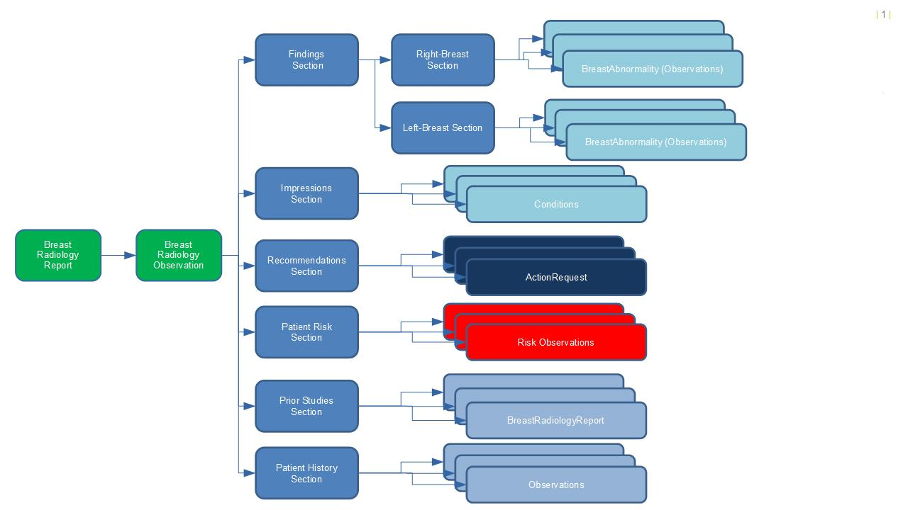

This is the first For-Comment Ballot for the Breast Cancer Data FHIR Implementation Guide (IG) sponsored by Clinical Information Council (CIC) Work Group, and co-sponsored by the Clinical Information Modeling Initiative (CIMI) and Imaging Integration Work Groups. The Breast Radiology FHIR IG was organized by the Cancer Interoperability Group, a voluntary group representing a wide variety of organizations and perspectives, including providers, medical professional societies, vendors, and governmental organizations.
Breast radiology is a very narrow and highly specialized niche of medicine which is predominantly, but not exclusively, focused on screening, diagnosing and guiding treatment of breast cancer. Breast radiology is also unique in that most studies are read by specialists that are solely focused on this singular body location and collection of modalities and techniques that are narrowly focused. It is also worth noting that this field was the very first to explore specific regulatory requirements for encoding information for standardized categorization of clinical status and to mandate precise communications between the radiologist, referring physician and patient, including bi-annual screening reminder letters among others.
The team that has worked to produce this initial for comment ballot feels that for every aspect of our ballot that is unique to the narrow field of breast radiology there are a dozen issues, concerns and challenges that will be felt by a very broad variety of structured clinical communication between specialists and care teams. Clinical pathology reports, post operative surgery reports, clinical genomics reports among others, all share cross cutting concerns that have yet to be fully explored in FHIR profiles. Conventions and expectations related to how information is organized within existing narrative reports have challenged the development of this particular ballot leading our team to believe that changes still need to be made to certain existing FHIR Resources to fully meet the needs of similar projects.
The following graphic should provide a high-level view of the existing expectations and documentation conventions of a typical breast radiology report.

In the context of FHIR we are currently utilizing the FHIR DiagnosticReport anchor resource as since it provides a resource definition that can be referenced in a broad variety of other clinical communications as the reason for other treatment and diagnostic choices. This resource does not however provide the structural capabilities to aggregate together collections of observation, conditions and recommendations into the sections and subsections that are currently expected in a breast radiology report. For this ballot we have chosen to use the Composition resource which was designed for this purpose. Since DiagnosticReport did not inherently provide a method to reference Composition in this way, we were left with the somewhat awkward option of constraining out the Result attribute and then adding back in a nearly identical attribute ResultComposition which allows for referencing Composition.
While nothing being done here is specifically forbidden within FHIR, we feel that taken together this strategy has. We also feel that when a solution is found to these structural challenges it should be clearly documented so that as the many hundreds of similar profiling projects scale up future teams will benefit from clear guidance and more obvious design choices.
Breast Radiology Reporting has long been an outlier in the radiology space in that structured guidelines for consistent reporting of the clinical data are well documented and non controversial, so the clinical content has been authored to fully align with accepted practices.
The authors of this Implementation Guide must humbly admit that we are uncomfortable with some of the modeling options that are represented herein and are asking the FHIR community to constructively contribute to the consideration of issues which we believe to be cross-cutting challenges to a broad constituency of similar use cases.
Our primary goal of this first ballot cycle is to seek comments on the fundamental FHIR patterns that we have used in order to express what is today a written report with a well known and established pattern of Sections and Sub-Sections each containing different forms of clinical information with each having it own context. Very different information will be contained within the Impressions and Recommendations sections of the document and we have attempted to express this in FHIR in the least awkward way available using the existing FHIR Resources available.
We feel that what is being presented here in this ballot is short of satisfactory for the needs of the broad collections of teams which will be facing very similar challenges over the coming years. Almost every clinical specialty produces a huge variety of clinical reports that will need to express sections and sub-sections in a clean manner and we feel this aspect needs to be improved.
There are several representations of the same content in the ballot materials. Different representations will be useful to different audiences:
The sponsoring work groups and the Cancer Interoperability Group are seeking both general and specific comments regarding this material.
These concerns are discussed further in the Modeling Approach section.
The Breast Cancer Interoperability FHIR Implementation Guide (IG) contains a subset of logical models for breast radiology reporting with a particular focus on data elements used for breast screening, diagnosis and cancer staging. FHIR profiles are provided as an example physical representation of the logical models.
The Cancer Interoperability Project aims to address the need within the radiology community to quickly provide consistent and high quality FHIR Implementation guide to push forward interoperability and research. We passionately believe that modeling cancer data in a way that can be used for the diagnosis, treatment, and research of cancer can address many of the challenges that patients and caregivers face today. The project is a collaboration of a diverse multidisciplinary group involved in the diagnosis, treatment, research, and surveillance of cancer.
The IG covers breast radiology reporting data necessary support breast cancer screening, diagnosis and research, focusing first and foremost on data driving clinical decision-making for medical and surgical oncologists.
Over time, we expect this IG and others will incrementally evolve to cover a wider range of clinical domains (e.g. pathology, oncology, clinical genomics, surgery, interventional radiology, etc), and expand its scope to include other key areas for breast cancer treatment (e.g. radiation therapy, chemotherapy), while supporting secondary data use in for clinical research and cancer registry reporting.
The IG contains several different elements, accessed using the top level navigation tabs:
Specifications consulted for the development of this IG include:
In addition to sources specifically providing clinical content related to breast radiology, from a modeling perspective, CIMI and FHIR models were also used as a source.
The intention of a logical model is to represent the structure of the model without implementation-specific considerations. The logical model can then be transformed into one or more implementable forms, for example, V2 messages, FHIR profies, C-CDA templates, etc. In theory, this allows logical model retain its value, while implementation fashions come and go.
The tools used to define the models and produce the logical models and the FHIR profiles are open source or freely available for open use online.
The Standard Health Record (SHR) Initiative. The SHR tooling consists of several elements:
The final form of the Implementation Guide (the html pages you see here) was produced using the standard FHIR Implementation Guide Publisher (IGPub).
The Clinical Information Modeling Initiative (CIMI) is an HL7 Work Group that is producing detailed clinical information models to enable interoperability of health care information systems. The goal of CIMI is to create a shared repository of detailed clinical information models, all based on the same core reference model and data types, with formal bindings to standard coded terminologies. CIMI models are logical abstractions, independent of any specific programming language, implementation technology, or type of database.
The CIMI modeling hierarchy is still a work in progress but the authoring team has made the committment to maintain and evolve the underlying modeling structured to align and match the official CIMI hierarch as it matures.
While the goal is to eventually submit the Breast Radiology models for review and ultimate CIMI conformance, a process which is still in development. One certain aspect of CIMI Conformance is the requirement to serialize domain logical models into Basic Metamodel (BMM) and Archetype Description Language (ADL) files. This should be considered as part of the Breast Radiology modeling teams committment to CIMI.
This specification may contain and/or reference intellectual property owned by third parties ("Third Party IP"). Acceptance of the FHIR Licensing Terms does not grant any rights with respect to Third Party IP. The licensee alone is responsible for identifying and obtaining any necessary licenses or authorizations to utilize Third Party IP in connection with the specification or otherwise.
Any actions, claims or suits brought by a third party resulting from a breach of any Third Party IP right by the Licensee remains the Licensee’s liability. Following is a non-exhaustive list of third-party terminologies that may require a separate license: